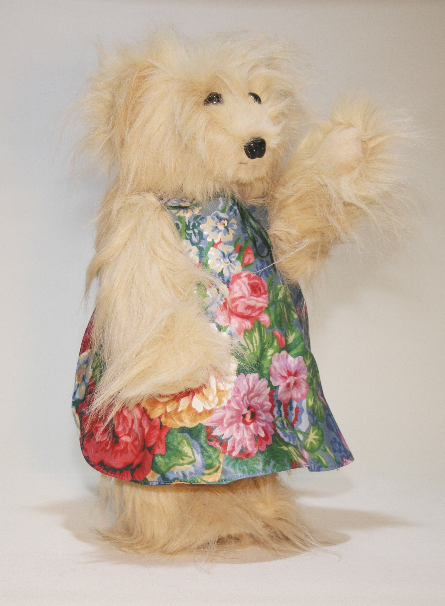

Portfolio
About
Cream Teddy
All the teddies are made with synthetic fur, plastic eyes, and nose. They stand to about 35cm tall. The head, legs and arms are jointed. All the clothes are made from cotton fabrics.
